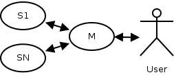

Kontinuierliche Integration
Design und prototypische Implementation
auf Basis einer verteilten Datenbank
| Author
| Ronny Pfannschmidt
|
| Matrikel
| 250154
|
| Referent
| Prof. Dr. Harm Knolle
|
| Koreferent
| Dr. David Sommer
|
## Leitfaden
* Kontinuierliche Integration
* Motivation und Problem
* Lösungswege und existierende Systeme
* Das System
* Aufbau
* Probleme
* Fazit
* Ausblick
* Abschluss + Demo
## Kontinuierliche Integration
## Was ?
## Warum ?
## Motivation und Problem
* Neuerungen
* Quellcode Management (SCM)
* Menge der Platformen
* Datenanalyse/Zugriff
* Verhalten
* Zusammenhänge
## Lösungswege
* Erweiterung in Altsystem
* Neues System
## Altsysteme Probleme

* Datenzugriff
* Erweiterbarkeit
* Fehleranfälligkeit
## Neusystem Wünsche
* einfacher Datenzugriff
* erweiterbar
* fehlertolerant
## Neusystem Kernfunktionen
## Auswahl
* Build Achsen
* Zustandsberichte
* Schritte
* SCM
* Prozesse
Überblick physisch

Überblick logisch

Überblick Schema
 ## Arbeitsschritte
## Arbeitsschritte
und ihre Ausführung
* Procdir
* SCM
* Process
## Zuteilung von Arbeitspaketen
* Methoden
* Token
* Claim
## Besondere Ansätze
* Abbildung verteiltes System auf
verteilte Datenbank
* Zustandsmaschinen Konsistenzwahrung
* CAP Abdeckung
* Komponente - Knoten : C-A
* Knoten - Knoten : A-P
Beispiel Lebenszyklus Arbeitspaket
 ## Datenbank
* Master-Master Replikation
* schemafreie Daten
* Änderungsnotifikationen
## Datenbank
* Master-Master Replikation
* schemafreie Daten
* Änderungsnotifikationen
## * CouchDB *
## Implementationsprimitiven
* listen_changes
* watch_for
* watches_for
* run_callbacks
## Implementation Inbox+Manager
* Auftrag Validieren
* Arbeitspakete Generieren
* Arbeitschritte Ausfüllen
* Arbeitspakete Zuteilen
## Implementation Arbeiter
* Arbeitspaket in Anspruch nehmen
* Zuteilung erwarten
* Arbeitsschritte Abarbeiten
## Aufgetretene Probleme
* Langwierige Anlaufphase
* Konfliktsituation Claiming
* Locksituation Management
## Anlaufphase
* Datenstrom über Änderungen beginnt immer am Anfang
* Lösungen
* Position Speichern
* Index
* Implemtiert Index
## Konflikt claiming
* deterministische Auswahl des nächsten Arbeitspaketes
* Lösungen
* Zufall
* Wechsel auf Token
* Implementiert: Zufall
## Locksituation Management
* lineare Abarbeitung im Manager
* Lösungen
* mehr Prozesse
* Priorisierung
* Implementation ausstehend
## Fazit
#### Experiment Erfolg
* erweiterbar
* fehlertolerant
* Standardschnittstellen
## Ausblick
* Benutzeroberfläche
* Benutzerverwaltung
* weitere Erweiterungen,
insbes. Testresultate
* CouchDB Fortentwicklung
## Abschluss
* Danke für die Aufmerksamkeit!
## Demo